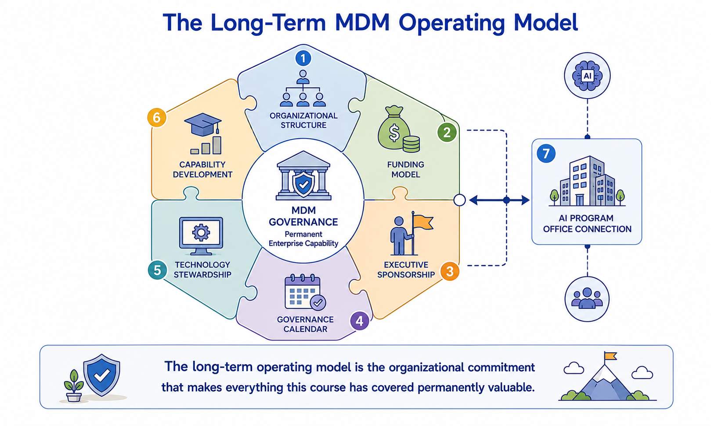

Long-Term Operating Model
Module support notes
What a Self-Sustaining Operating Model Looks Like
A self-sustaining MDM operating model has four defining characteristics. It funds itself through documented value — operational savings, AI performance improvements, and risk reduction that are measured and reported, making the case for continued investment every budget cycle without relying on program momentum from the original launch. It owns its own roadmap — a standing governance body with authority to prioritize domain expansion, AI readiness evolution, and governance framework changes without requiring individual executive approval for each decision.
It absorbs organizational change — role transitions, reorganizations, and technology changes are handled through documented processes rather than requiring heroic efforts from specific individuals to maintain continuity. And it continuously improves — a managed backlog, annual maturity assessment, and quarterly governance review ensure the program is always getting better, not just maintaining status quo.
Note
A self-sustaining MDM operating model funds itself, owns its roadmap, absorbs organizational change, and continuously improves — without depending on the original implementation team or the energy of a new program launch to keep it moving. The test for self-sustainability is simple: if the three people most central to the program left tomorrow, would it continue to function at the same level of quality and AI readiness? If the answer is no, the program is not yet self-sustaining.
![Four defining characteristics of a self-sustaining MDM operating model shown as pillars: Funds Itself — documented value measurement that makes the case for continued investment every budget cycle; Owns Its Roadmap — a standing governance body with authority to prioritize without individual executive approval; Absorbs Organizational Change — documented processes that handle transitions without heroic individual effort; and Continuously Improves — managed backlog, annual maturity assessment, and quarterly governance review.](../assets/m11-self-sustaining-model.png)
Embedding AI Accountability in the Operating Model
The most durable form of AI accountability in an MDM program is structural — built into the operating model so that AI governance happens as a natural component of existing governance processes rather than as a separate compliance exercise that competes with operational priorities for attention.
Organizations that have successfully embedded AI accountability structurally show three common patterns: AI certification status is a standing agenda item at every domain council meeting, not a quarterly add-on; AI model owners are named stakeholders in the MDM governance structure with documented rights and responsibilities; and quality drift alerts automatically notify AI model owners alongside data stewards, so AI governance is triggered by the same operational events as data governance rather than by a separate AI monitoring process.
Tip
Test AI accountability embeddedness with three questions: Is AI certification status reviewed at every domain council without anyone having to remember to add it? Are AI model owners receiving quality drift alerts automatically, without a manual notification step? Can an auditor reconstruct the governance history of any production AI model's training data without requesting anything from the MDM team? Three yes answers indicate structural embeddedness. Fewer than three indicate AI governance is still dependent on individual effort rather than organizational process.

The long-term operating model is what the course has been building toward — a permanent, self-sustaining, AI-accountable organizational capability that compounds in value every year it operates.
